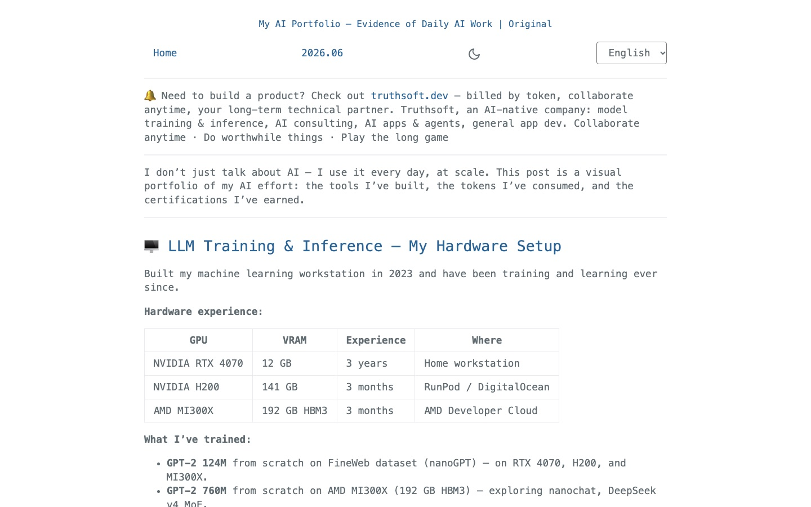
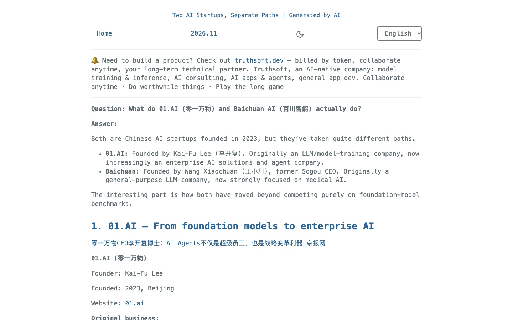
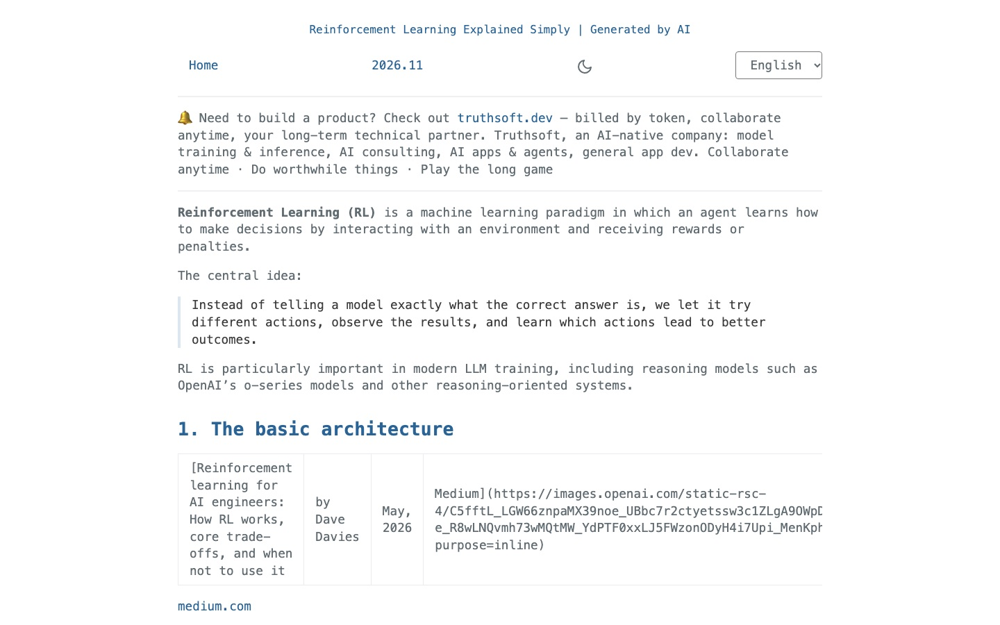
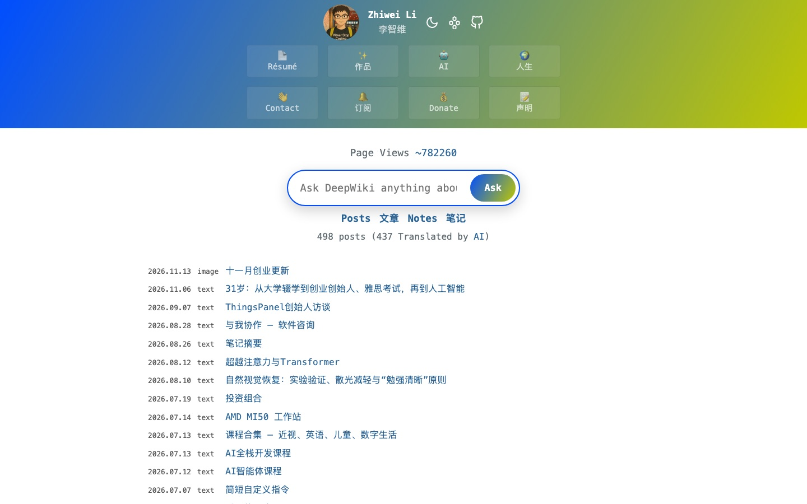
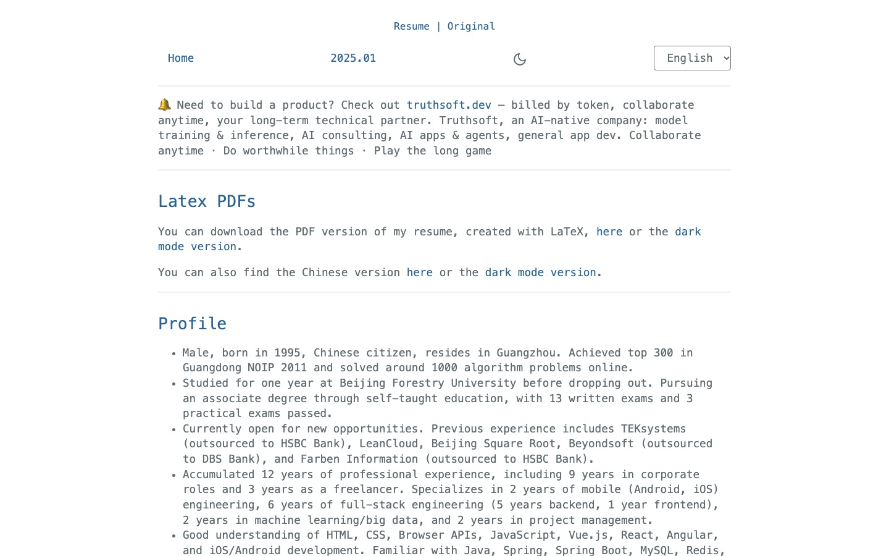
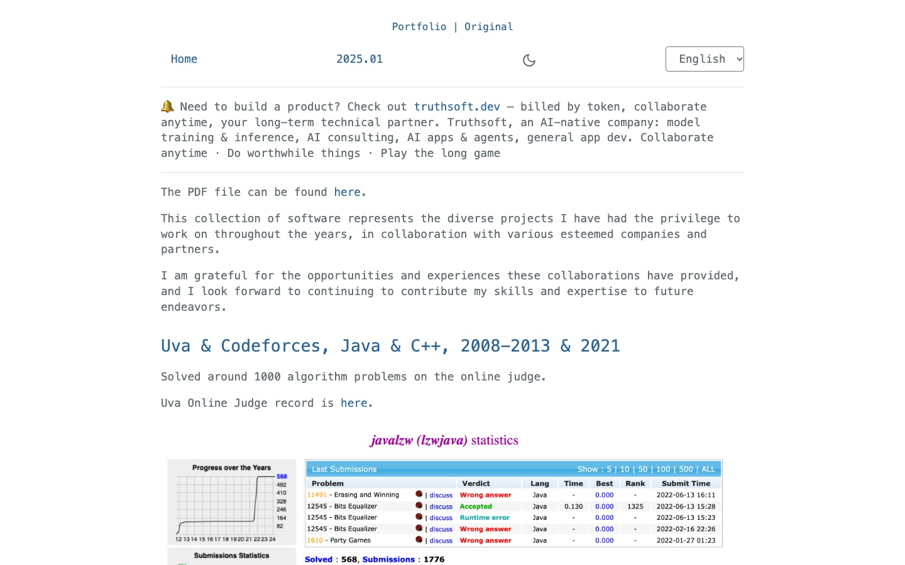

Jekyll AI 博客
Web · AI 驱动的双语知识博客
以 AI 能力增强的 Jekyll 双语知识博客，聚合三万多篇文章与笔记：自动 AI 双语翻译、TTS 语音朗读、MathJax 公式渲染、夜间模式、PDF/EPUB 导出与 RSS 订阅，并通过 GitHub Actions 全自动构建与发布。
界面预览






Web · AI 驱动的双语知识博客
以 AI 能力增强的 Jekyll 双语知识博客，聚合三万多篇文章与笔记：自动 AI 双语翻译、TTS 语音朗读、MathJax 公式渲染、夜间模式、PDF/EPUB 导出与 RSS 订阅，并通过 GitHub Actions 全自动构建与发布。





